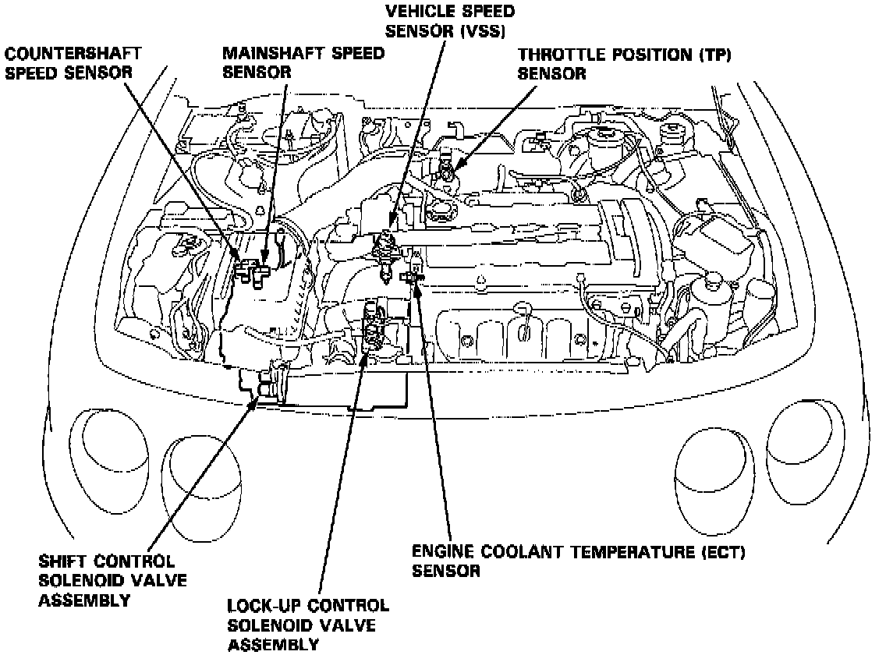

Operation CHARM
: Car repair manuals for everyone.
Home
>>
Acura
>>
1994
>>
Integra (GS-R) L4-1797cc 1.8L DOHC (VTEC)
>>
Repair and Diagnosis
>>
Transmission and Drivetrain
>>
Transmission Control Systems
>>
Sensors and Switches - Transmission and Drivetrain
>>
Sensors and Switches - A/T
>>
Transmission Speed Sensor
>>
Locations
>>
Mainshaft Speed Sensor
Mainshaft Speed Sensor
